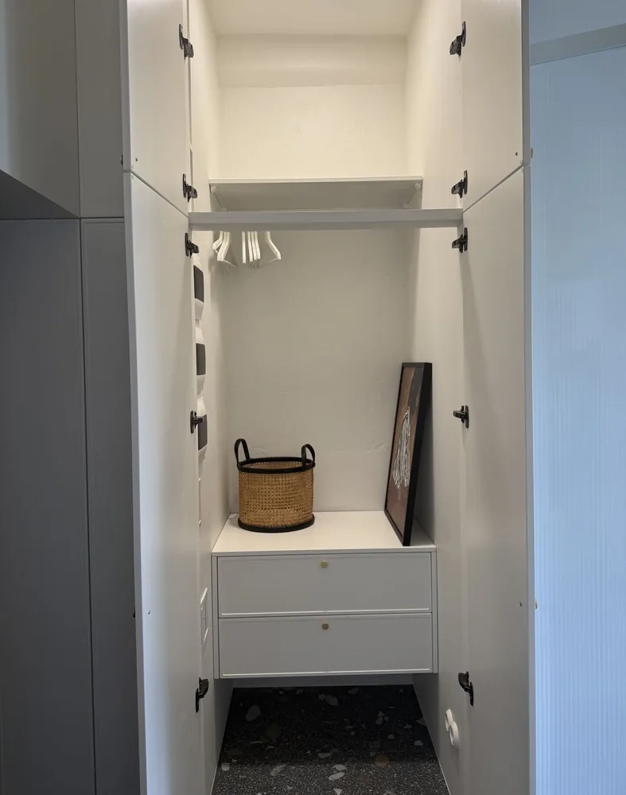
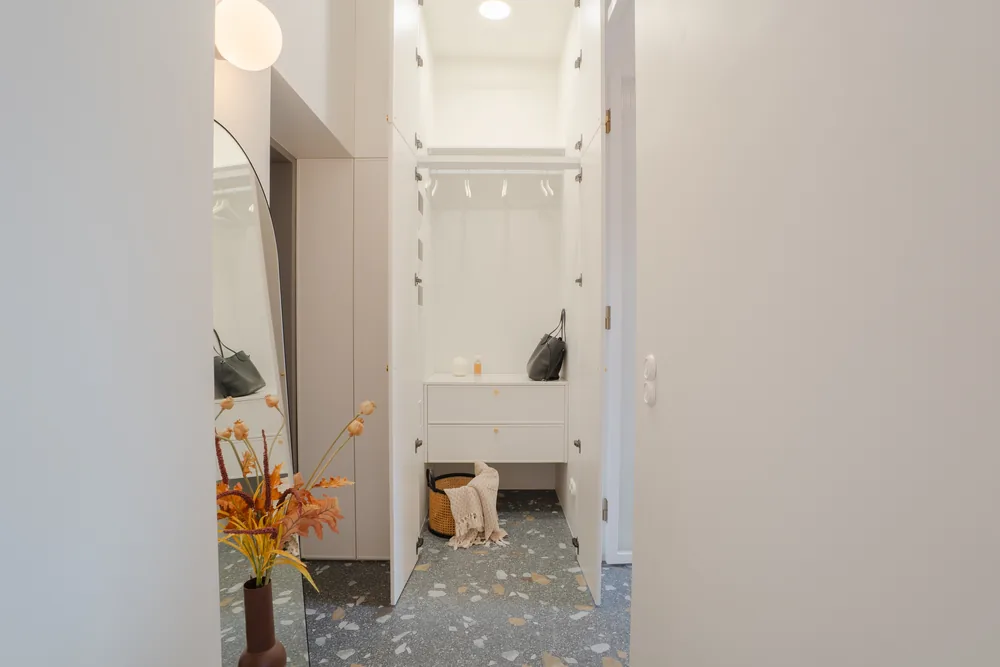
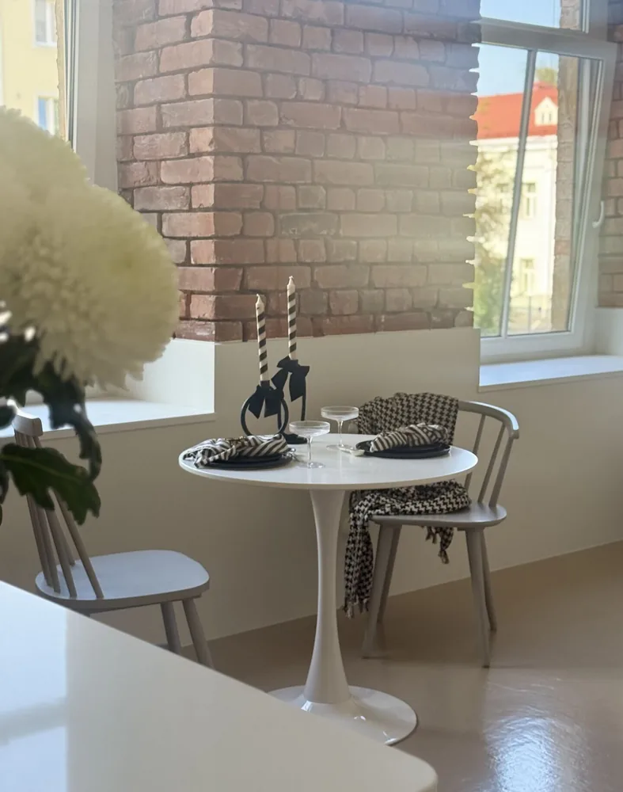
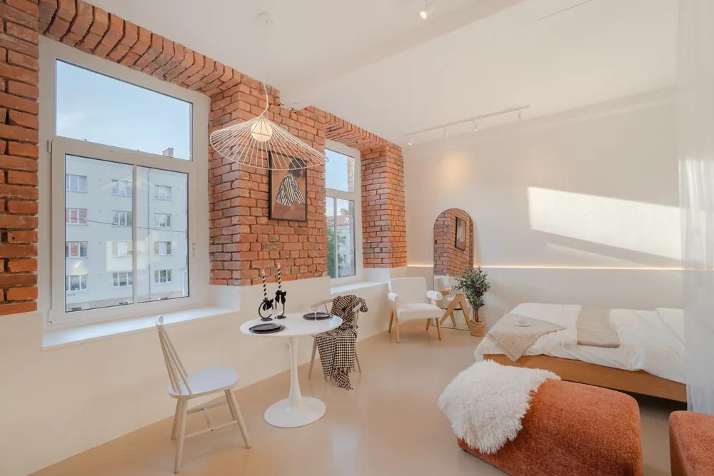

12 viga, mida kodu pildistamisel tehakse
Lühivastus
Enamik halbu kuulutusfotosid ei ole halvad tehnika pärast. Nad on halvad seepärast, et kaader on tehtud valest kohast, vales valguses ja ruumis, mida ei valmistatud ette. Need kolm asja parandavad rohkem kui uus kaamera.
Oleme pildistanud piisavalt kodusid, et samad vead korduvad peaaegu igas kuulutuses, mille müüja ise teeb. Head uudised: enamik neist ei nõua parandamiseks tehnikat, vaid ainult teadmist, et need üldse vead on.
Käime nad ükshaaval läbi. Iga vea juures on ka see, mida selle asemel teha.
Kaader ja kompositsioon
- Pildistad uksest. Kõige levinum viga üldse. Ukseavast tehtud kaader näitab ruumi kitsa koridorina ja jätab pooled seinad välja. Astu ruumi sisse ja mine nurka – nurgast avaneb korraga kaks seina ja ruumi kuju on kohe loetav.
- Kaamera on liiga kõrgel. Silmade kõrguselt pildistades on kaadris palju põrandat ja vähe ruumi. Kinnisvarafotol on kaamera tavaliselt umbes 1,2–1,4 meetri kõrgusel – laua ja aknalaua vahel. Proovi sama kaadrit kaks korda, kükitades veidi madalamale: vahe on üllatavalt suur.
- Seinad kalduvad. Kui kaamerat üles või alla kallutada, hakkavad vertikaalsed jooned kokku jooksma ja tuba näib ümberkukkuva kastina. Hoia kaamera loodis. Telefonis saab enamasti ruudustiku sisse lülitada – see üksi lahendab pool probleemi.
- Kaader on liiga lai. Ülilai objektiiv või telefoni „0,5x“ venitab servad laiali: diivan muutub kolmekohalisest viiekohaliseks ja vannituba tundub kaks korda suurem. Ostja märkab seda esimesel näitamisel ja kaotab usalduse kogu kuulutuse vastu. Ruumi tuleb näidata sellisena, nagu ta on.

Enne · Telefonifoto
Pärast · LINDJANARValgus
- Pildistad vastu akent. Telefon seab säri akna järgi ja tuba jääb pimedaks – või seab toa järgi ja aknast saab valge laik. Kumbki ei näita seda, mis päriselt on. Lahendus on kas pildistada nii, et aken jääb küljele, või teha mitu säritust ja need kokku panna.
- Kõik lambid põlevad. Kollane lambivalgus ja sinakas päevavalgus koos annavad tulemuse, kus pool tuba on oranž ja pool hall. Enamasti on kõige puhtam pilt siis, kui laelambid on välja lülitatud ja ruum saab valguse aknast.
- Pildistad õhtul. Pime kodu näeb fotol alati väiksem ja kinnisem välja. Sisefotod tehakse päevavalguses. Erand on ainult teadlik õhtukaader majast, kus aknad soojalt helendavad – aga see on välisfoto, mitte tubade lahendus.

Enne · Telefonifoto
Pärast · LINDJANARRuumi ettevalmistus
- Ruum on pildistamiseks ette valmistamata. Nõudekuivati, laadijajuhtmed, prügikast, kingad esikus, magnetid külmkapil. Ostja ei vaata neid teadlikult, aga tema silm loeb ruumi kokku „kitsaks ja segaseks“. Pool tunnist ettevalmistust muudab fotot rohkem kui ükski objektiiv.
- Vannituba on jäetud nii, nagu ta on. Lahtine WC-kaas, hambaharjad, šampoonipudelid ja käterätikud kraanikausil. Vannituba on ruum, mille juures ostja on kõige nõudlikum – ja mille korda tegemine võtab kõige vähem aega.
- Isiklikud asjad on kaadris. Perefotod, dokumendid, ravimid, laste joonistused. Osalt on see privaatsuse küsimus, osalt müügi oma: ostja peab kaadrisse mõtlema iseennast, mitte praegust elanikku.
Väike test. Tee ruumist üks foto, vaata seda telefoni ekraanil pöidlasuuruselt ja küsi: mis siin kaadris kohe silma jääb? Kui vastus ei ole „ruum“, on midagi kaadris üleliigset.
Kuulutus tervikuna
- Fotosid on palju, aga nad on samad. Kaheksa peaaegu ühesugust kaadrit elutoast ja mitte ühtegi vannitoast. Ostja otsib kuulutusest vastuseid: mitu tuba, kuidas nad omavahel paiknevad, kust tuleb valgus, milline on vannituba, mis on aknast näha. Iga foto peaks vastama ühele küsimusele.
- Esimene foto on juhuslik. Portaalis otsustab esimene pilt, kas kuulutus üldse avatakse. Sinna ei lähe koridor ega panipaik, vaid kodu kõige tugevam ruum – tavaliselt elutuba või köök koos valgusega.
Sellest, kuidas peafotot valida, kirjutasime pikemalt eraldi artiklis. Ja kui tahad enne pildistamist kodu korralikult üle käia, on meil olemas ruumipõhine kontrollnimekiri.
Mida sellest kaasa võtta
Kui teed fotod ise, alusta neljast asjast: pildista päeval, kustuta laelambid, mine nurka ja korista ruum enne kaadrit ära. Need neli ei maksa midagi ja katavad enamiku ülalolevast nimekirjast.
Ülejäänu – vastuvalguse ohjamine, vertikaalide sirgeks saamine, ühtlane värvitasakaal kogu galeriis – on juba tehnika ja töötluse töö. Selleks me olemas olemegi.
Ei taha ise katsetada? Korteri pildistamine algab 85€-st, eramaja 109€-st. Teeme kindlaks, et majast või korterist on tehtud pildid, mis panevad ostuhuvilise ostma ja üürihuvilise üürima.
Vaata hindu